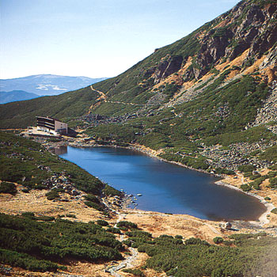

|
|
|
 |
|
|

|
|
|
|
|
|
W środku przepięknej doliny, u stóp monumentalnego Gerlacha, nad szmaragdową
tonią górskiego stawu, opodal szumiącej potężnej siklawy wznosi się
socrealistyczna sylwetka paskudnego i wielkiego budynku w stylu późnego Gierka.
Na dwóch piętrach mieszczą się: pojemna restauracja, kawiarnia i bar,
(wywieszki "zakaz spożywania własnego jedzenia i picia"), klub
przewodników górskich (stąd startują wycieczki na Gerlach - najpopularniejszy
szczyt dostępny jedynie z przewodnikiem), oraz pokoje hotelowe
(jedno-, dwu- i trzyosobowe) oraz tańsze pokoje turystyczne (cztero- i
sześcioosobowe).
|
|
| Historia |
|
|
|
Schronisko nad Wielickim Stawem nie miało szczęścia. Pierwszy mały kamienny budynek
postawił na wschodnim brzegu już w 1871 roku taternik i zarządca Starego
Smokowaca - Eduard Blásy. Fundusze
pozyskano na drodze skłądki przeprowadzonej wśród gości i przedsiębiorców
tej miejscowości. Jednak już po trzech latach schronisko zostało zniszczone
przez lawinę.
W latach 1876-78 na Wyżnej Wielickiej Polanie (Mokrej Polanie) nowe schronisko
powstało za sprawą Węgierskiego Towarzystwa Turystycznego (MKE). Miało kamienne fundamenty
i drewnianą konstrukcję, kuchnię, świetlicę, magazyn, noclegownię, werandę i ogrzewanie
w postaci pieców. Jego fundamenty, pozostałe po pożarze, który zniszczył budynek w
1913 roku, można do dziś zobaczyć idąc Magistralą na Hrebienok. Schronisko to
nazywane było Hunfalvyho chata - na cześć pochodzącego z Wielkiego Sławkowa węgierskiego
geografa, Jana Hunfalvy'ego (1820-1888).
W związku ze wzrostem ruchu turystycznego Schronisko Hunfalvy'ego nie mogło
pomieścić wszystkich chętnych i wrocławska sekcja MKE już w latach 1894-95
wybudowała w obecnym miejscu nowy obiekt (stąd nazwa Śląski Dom). Inwestorem był
także Pavol Weszter, właściciel Tatrzańskiej Polanki. Budynek miał osiem pomieszczeń,
a w latach 1907, 1942, 1958 dodano mu nowe części, tak że mogło pomieścić
ponad 100 osób. Piękne, utrzymane w stylu alpejskim schronisko
o stromo opadającym dachu z mansardami spłonęło w w nocy z 29 na 30
listopada 1962 roku.
Przez kolejne lata turystów obsługiwał jedynie prowizoryczny bufet. Obecny budynek
wzniesiono w latach 1965-68.
Podczas pielgrzymki na Słowację, 3 czerwca 1995 dolinę Wielicką odwiedził
Jan Paweł II i modlił się w altance, specjalnie w tym celu postawionej na brzegu
Wielickiego Stawu.
|
|
| |
|
Nazwa polska: Śląski Dom, Schronisko Wielickie
Nazwa słowacka: Sliezsky Dom
Wysokość: 1667 m n.p.m.
Położenie: Dolina Wielicka (Velická dolina)
Czynne: cały rok
Ilość miejsc noclegowych: 120
Telefon: +421/(0)52/4425261, 4425202
Adres: Hotel Sliezky dom, Tatranska Polianka 059 82, Słowacja
Strona www: www.hotelsliezskydom.sk
Cena: (15.06-31.10.2005/przed 15.06 i po 31.10) łóżko ze śniadaniem i kolacją w pokoju 4-6-osobowym 675Sk/565Sk,
w pokoju 2-3-osobowym 725Sk/615Sk
dostawka 475Sk/445Sk
przy noclegu na 2 noce i więcej: 5-10% zniżki (szczegóły na ww. stronie hotelu) dzieci 4-12 lat: -20% (połowa porcji), do 3 lat gratis bez własnego łóżka
Dojście: Szlak ze Starego Smokowca / Tatrzańskich Zrębów / Tatrzańskiej Polanki
Punkt wyjścia na: Polski Grzebień, Małą Wysoką, Rohatkę
Trasy turystyczne:
szlaki dojścia do hotelu - dla początkujących turystów
szlak na Małą Wysoką - dla doświadczonych turystów
|

Strona zaakceptowana i skatalogowana w

|
|